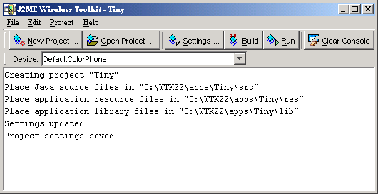

|
|
This chapter describes how you can use the J2ME Wireless Toolkit to create applications. It begins with a description of toolkit projects, then works through the development process.
There are two basic development cycles you are likely to follow in creating MIDlet suite applications. The first is quicker and simpler; you will probably use it in your initial development. The second cycle is longer but allows for more comprehensive and realistic testing.
Toward the end of the chapter you’ll read about how to use the J2ME Wireless Toolkit with advanced development tools like an obfuscator and a debugger. A final section briefly describes how to configure a web server to serve MIDP applications.
In the J2ME Wireless Toolkit, MIDlet suites are organized into projects, where the end result of one project is one MIDlet suite. A project contains all of the files that will be used to build a MIDlet suite, including Java source files, resource files, and the MIDlet descriptor.
The J2ME Wireless Toolkit works on one project at a time. You can create a new project or open an existing project.
In this chapter you will work with a very simple example project. As you read about each step in the development cycles, you can work along in the toolkit.
To create a new project, first start KToolbar. On Windows, choose Start > Programs > J2ME Wireless Toolkit 2.2 > KToolbar.1 You’ll see the KToolbar window.

Click on New Project... The toolkit will ask you for the name of the project and the name of the MIDlet class you will write. Fill in the names and click Create Project.
The project options automatically pop up, allowing you to set up the build environment for the project. The default options are fine for this example; just click on OK to dismiss the window. In the KToolbar console, you’ll see some messages telling you exactly where to store the source code and resource files for this project.

The simple development cycle looks like this:
Edit source code > Build > Run
If an error occurs when the toolkit attempts to compile your source files, go back and edit them again. If you find a bug when you are testing your application in the emulator, edit the source files to fix the bug.
Now that you understand the simple development cycle at a high level, the rest of this section illustrates how you can accomplish each step using the J2ME Wireless Toolkit.
Editing source code is the only step in which the J2ME Wireless Toolkit is no help at all. You will need to use the text editor of your choice to create and edit source code files.
If you are following along with the example project, create a new Java source file TinyMIDlet.java. It should be saved in the source directory of your project, which will be {toolkit}\apps\Tiny\src\TinyMIDlet.java where {toolkit} is the installation directory of the toolkit. The contents of the file are a very simple MIDlet:
import javax.microedition.lcdui.*; import javax.microedition.midlet.MIDlet; public class TinyMIDlet extends MIDlet implements CommandListener { public void startApp() { Display display = Display.getDisplay(this); Form mainForm = new Form("TinyMIDlet"); mainForm.append("Welcome to the world of MIDlets!"); Command exitCommand = new Command("Exit", Command.EXIT, 0); mainForm.addCommand(exitCommand); mainForm.setCommandListener(this); display.setCurrent(mainForm); } public void pauseApp () {} public void destroyApp(boolean unconditional) {} public void commandAction(Command c, Displayable s) { if (c.getCommandType() == Command.EXIT) notifyDestroyed(); } }
Save the file when you’re finished.
The next step is to build your source code. The toolkit makes this part very easy.
In the KToolbar window, click on the Build button. Assuming you saved your source file in the right place, the toolkit will find it and compile it. Compilation errors are displayed in the KToolbar console. If you have errors, go back and edit the source code to fix them. Once you’ve eliminated your errors, the KToolbar console tells you the project was successfully built.
Behind the scenes, the J2ME Wireless Toolkit also preverifies the compiled class files. MIDlet class files must be preverified before they can be run on a MIDP device or emulator. The toolkit quietly handles this detail for you; you probably won’t ever realize it’s happening. See the CLDC specification for more information on preverification.
Once the project builds successfully, you are ready to try it out in the emulator. Click on the Run button. The emulator pops up and shows a list of all the MIDlets in your project.
Choose the MIDlet you want and select Launch. If you’re following along with the TinyMIDlet example, you’ll see the fruit of your labors:
The second development cycle is slightly more complicated:
Edit source code > Package > Install > Run
In the full development cycle, the first step is identical to the simple development cycle. Editing source code is the same as always. The Build step is now incorporated in packaging.
The full development cycle includes two new steps, packaging and installing. Finally, running an installed application is different in important ways from running an application in the simple development cycle.
The J2ME Wireless Toolkit automates the task of packaging a MIDlet suite. The end result of packaging is two files, a MIDlet descriptor and a MIDlet suite JAR. The descriptor is a small text file that contains information about the MIDlet suite. The JAR contains the class files and resources that make up the MIDlet suite. Devices can use the descriptor to learn about the application before downloading the entire JAR, an important consideration in a memory-lean, bandwidth-starved wireless world.
To ask the toolkit to package your MIDlet suite, choose Project > Package > Create Package from the KToolbar menu. The MIDlet suite descriptor and JAR are generated and placed in the bin directory of your project.
Packaging might involve additional steps. You can use a code obfuscator to shrink the size of the MIDlet suite JAR, a technique that is described later in this chapter. In addition, the J2ME Wireless Toolkit provides tools to allow you to cryptographically sign MIDlet suites. See Chapter 6, “Security and MIDlet Signing,” for more information.
To properly test a MIDlet suite, you should install it into the toolkit’s emulator or a real device. When you press the Run button in KToolbar, the MIDlet suite is not installed into the emulator. Instead, the emulator runs the MIDlet classes directly.
The emulator also has the capability of installing applications into its memory in a process that resembles how applications are transmitted and installed on real devices. To install applications in the J2ME Wireless Toolkit emulator, choose Project > Run via OTA.
The emulator window pops open, but instead of running your MIDlet classes directly, this time the emulator shows the welcome screen of its Application Management Software (AMS). The emulator’s AMS is an example of the type of software that real devices must have to manage MIDlet suites.
Choose Apps to go to the main list of installed applications. Select Install Application and press the select button on the emulator. The emulator prompts you for the URL location of the application you want to install. The URL is already filled in for you.
Choose Go from the menu to begin the installation. The emulator shows a list of the applications it finds at the URL. Choose the only one and select Install from the menu. The emulator gives you one last chance to confirm your intentions.
Choose Install again to finish the installation. You’ll be returned to the emulator’s installed list of applications, which now includes the application you just installed.
Run via OTA is an extremely useful mechanism that makes it easy to install your MIDlet suite on the toolkit emulator. Some features must be tested using this technique, including the push registry and the installation of signed MIDlet suites.
If you want to test your MIDlet suite on a real device, you’ll need to install it first. How this happens depends heavily on the device you are using. There are two likely possibilities:
Once the application is installed, running it is simple. Just choose the application from the list and choose Launch from the menu.
Running an application on a real device depends heavily on the device itself. Consult your device documentation for information.
An obfuscator is a tool that reduces the size of class files. MIDlet suites need to be compact, both to minimize download times and to comply with sometimes stringent limits on JAR size imposed by manufacturers or carriers. Using an obfuscator is one way (not the only way) that you can keep your MIDlet suite JAR small.
You can use an obfuscator in the packaging step of the development cycle. Although the J2ME Wireless Toolkit doesn’t come with an obfuscator, it is already configured to use the ProGuard obfuscator. All you need to do is download ProGuard and put it in a place where the toolkit can find it.
ProGuard is published under the terms of the GNU General Public License (GPL). If you are comfortable with the terms of the license, you can download and use ProGuard free of charge.
Installing ProGuard in the J2ME Wireless Toolkit is straightforward:
proguard.jar file from the lib directory of the ProGuard installation to the bin directory of your J2ME Wireless Toolkit installation.Once ProGuard is installed, you can use it by choosing Project > Package > Create Obfuscated Package.
In some cases you will need to provide a script file that controls how the obfuscator works. If you are loading classes using Class.forName(), for example, you need to tell ProGuard to leave the class names unchanged.
Create a script file using a text editor, then save it under the project’s main directory. Consult the ProGuard documentation for information on script files. Next you need to tell the toolkit how to find this file. To do this, edit {toolkit}\wtklib\{platform}\ktools.properties, where {platform} is the name of your underlying platform (most likely Windows or Linux). Add a line as follows:
Replace “scriptfile” with the name you used for the script file. You will need to quit and restart KToolbar for the change to take effect.
The J2ME Wireless Toolkit also includes support for RetroGuard. If you want to use RetroGuard, you’ll need to download it separately and change the toolkit’s configuration.
retroguard.jar file from downloaded zip file to the bin directory of your J2ME Wireless Toolkit installation.\wtklib\{platform}\ktools.properties so that it uses the RetroGuard obfuscator plug-in:obfuscator.runner.class.name: com.sun.kvem.ktools.RunRetro obfuscator.runner.classpath: wtklib\\ktools.zip
Retroguard will be used when you create an obfuscated package.
To switch back to ProGuard, edit the obfuscator lines in the ktools.properties file as follows:
obfuscator.runner.class.name: com.sun.kvem.ktools.RunPro obfuscator.runner.classpath: wtklib\\ktools.zip
If you want to use a different obfuscator, you’ll have to implement an obfusctor plug-in yourself. See the J2ME Wireless Toolkit Basic Customization Guide for an example of how to implement an obfuscator plug-in.
A variation on running your application is running it with a debugger. A debugger allows you to monitor the running application more closely, set breakpoints, and examine variables.
You will need to supply your own debugger. You can use the jdb debugger from J2SE™ or another debugger of your choice.
Begin by choosing Project > Debug from the KToolbar menu. Enter the TCP/IP port number that the debugger will use to connect to the emulator. Click on Debug. The emulator begins running and waits for a connection from a debugger.
Start up your debugger and attach it to the port you specified. Make sure to set the remote debugger to run in remote mode and to use TCP/IP. For more information, consult the debugger’s documentation.
Information about using jdb with the J2ME Wireless Toolkit is here:
Debugging MIDlets
http://developers.sun.com/techtopics/mobility/midp/questions/jdb/
The MIDP 2.0 specification includes the Over The Air User Initiated Provisioning Specification, which describes how MIDlet suites can be transferred over-the-air (OTA) to a device. You can test this type of scenario using the J2ME Wireless Toolkit emulator.
To deploy a packaged MIDP application remotely on a Web server:
.jad extension to the text/vnd.sun.j2me.app-descriptor MIME type..jar extension to the application/java-archive MIME type.The details of how to configure a Web server depend on the specific software used.
The emulator implements the device behavior during OTA provisioning. You can use the emulator to test and demonstrate the full provisioning process of MIDlet suites from a server to the device. All you need to do is launch the emulator’s AMS. (You may already be familiar with the AMS if you have used KToolbar’s Run via OTA option.
To launch the emulator’s AMS, you have two options:
{toolkit}\bin\emulator -Xjam
Now follow the AMS prompts to install your application. This process is very similar to the Run via OTA option described earlier in this chapter, except you will need to enter the URL of your own server to install your application.
|
|
J2ME Wireless Toolkit User's Guide J2ME Wireless Toolkit 2.2 |
Copyright © 2004 Sun Microsystems, Inc. All rights reserved. Use is subject to the license terms.